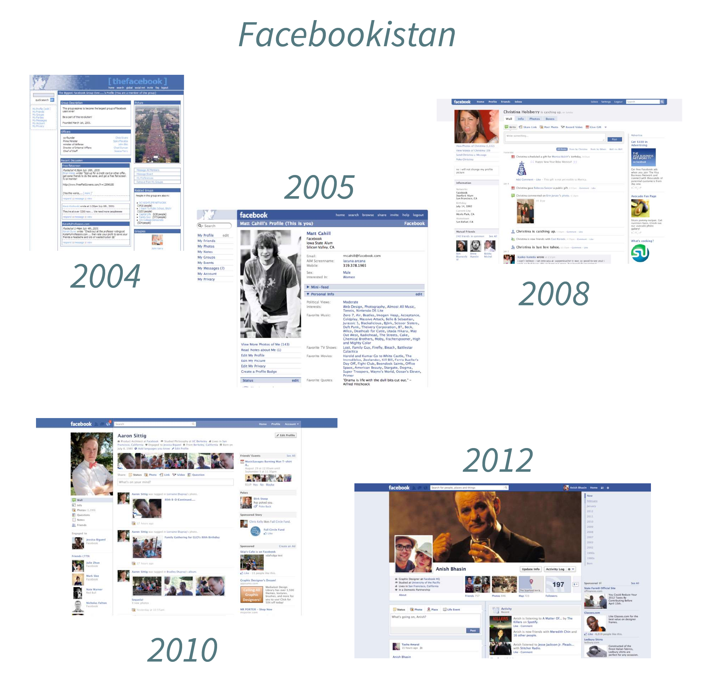
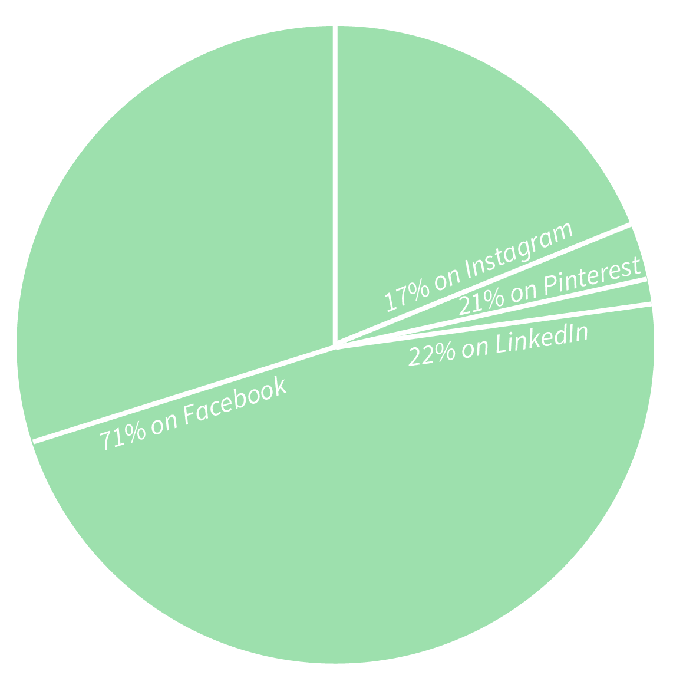

the smartphone take-over
2007
3. Apple releases first iPhone
($499 for 4GB, $599 for 8GB)
Google announces free, open development of Android's operating system
2. The Motorola RAZR2 is a "luxury phone" and the "ultimate consumer product"
(on every major carrier in US)
2010
5.6% of Americans have an iPhone
35% of adults have cell phones with apps, of that % only 2/3 actually use the apps
Instagram and Pinterest are launched, kickstarting social photo-sharing on a huge scale
2013
A majority of Americans (56%) now own a smartphone of some kind
Apple app store downloads top 40 billion, with the average iPhone owner using an average 27 apps for a total average of 30.5 minutes a month
2015
In America, smartphone sales exceed 51 billion dollars.
20% of Americans own an iPhone. (That's about 63 million people.)
70% of mobile phone users use a smartphone.
Percent of mobile phone users
who use a smart phone:
- 2010: 26.9%
- 2011: 39.1%
- 2012: 50.1%
- 2013: 56.8%
- 2014: 63.8%
- 2015: 70.1%
internet uses
Business & Marketing
Networking & Jobs
Education & Studies
Social Interaction
News & History
Politics & Reform
& internet abuses
User Privacy
Bullying & Threats
Sexual Predators
Data & Info Theft
Distractions & Overuse
Anti-Social Behavior
social media ui trends
+ the Facebook takeover

noteworthy ui/ux trends
- prominent imagery
- responsive design
- scroll-based sites
social media mayhem
Among internet-using adults...
